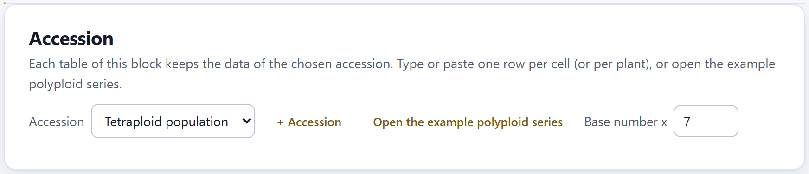
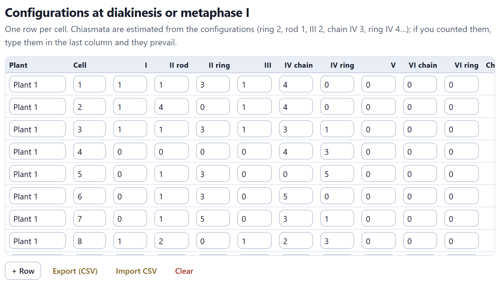
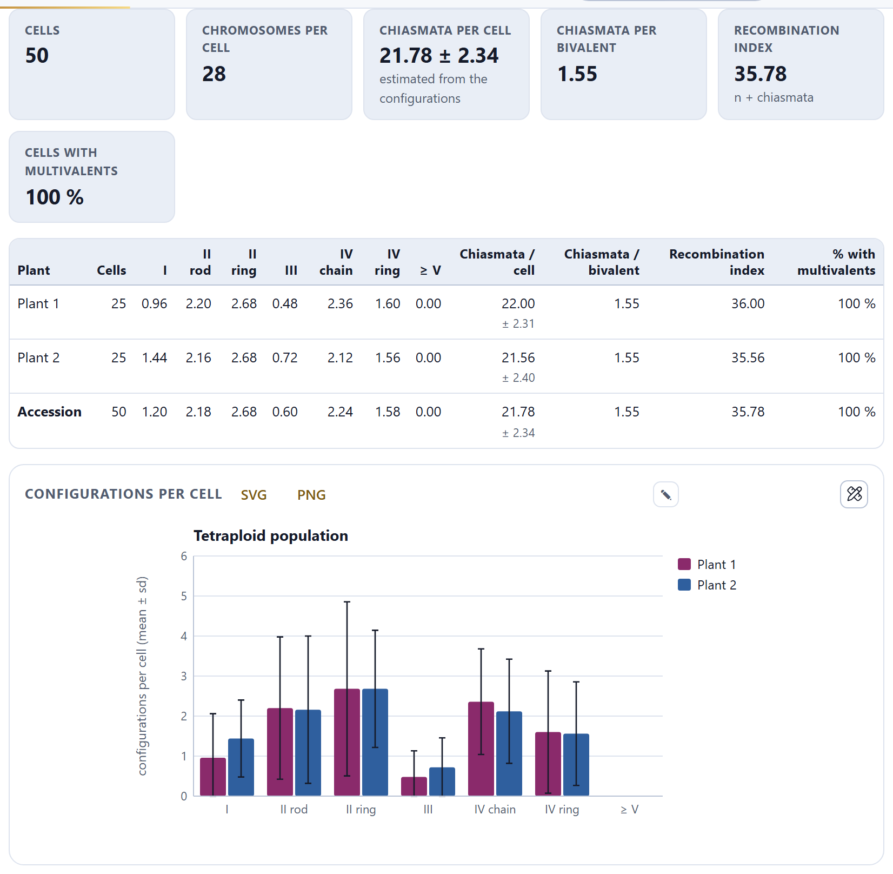
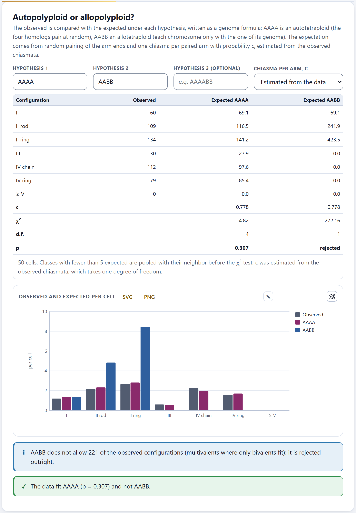
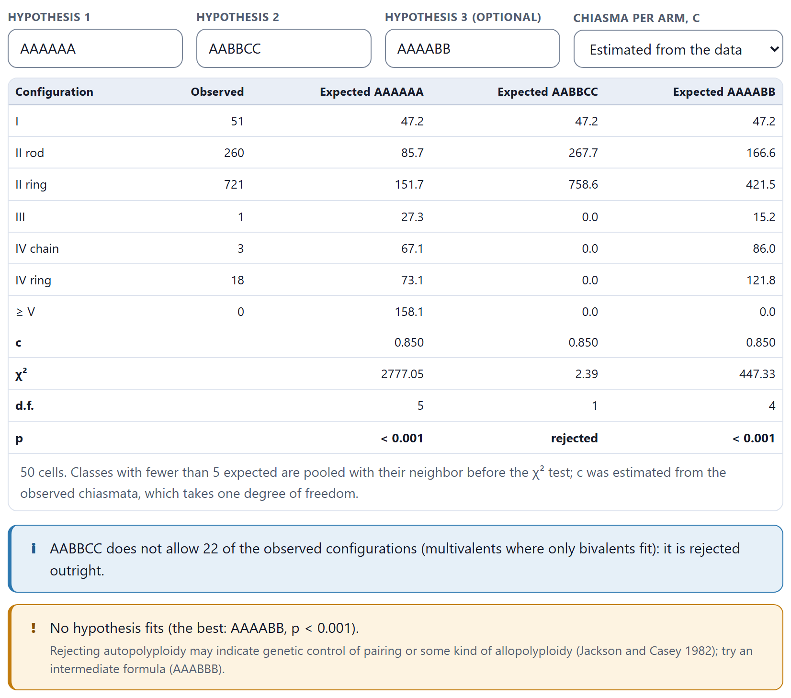
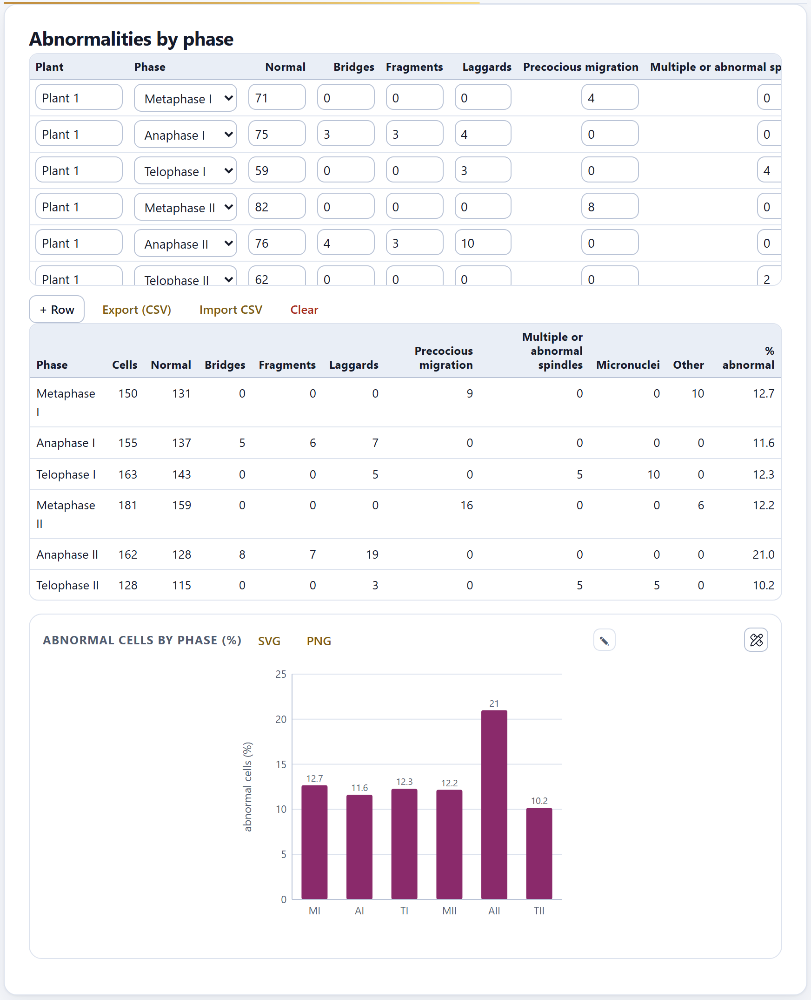
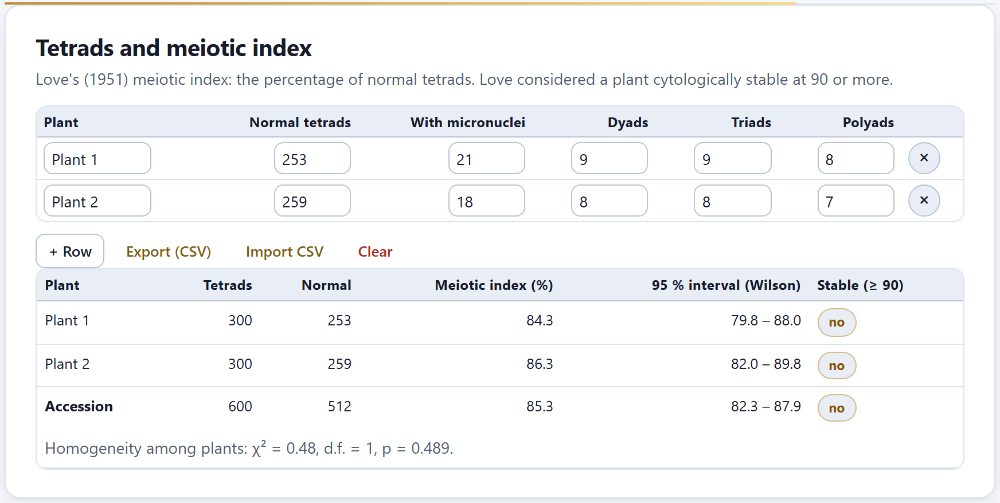
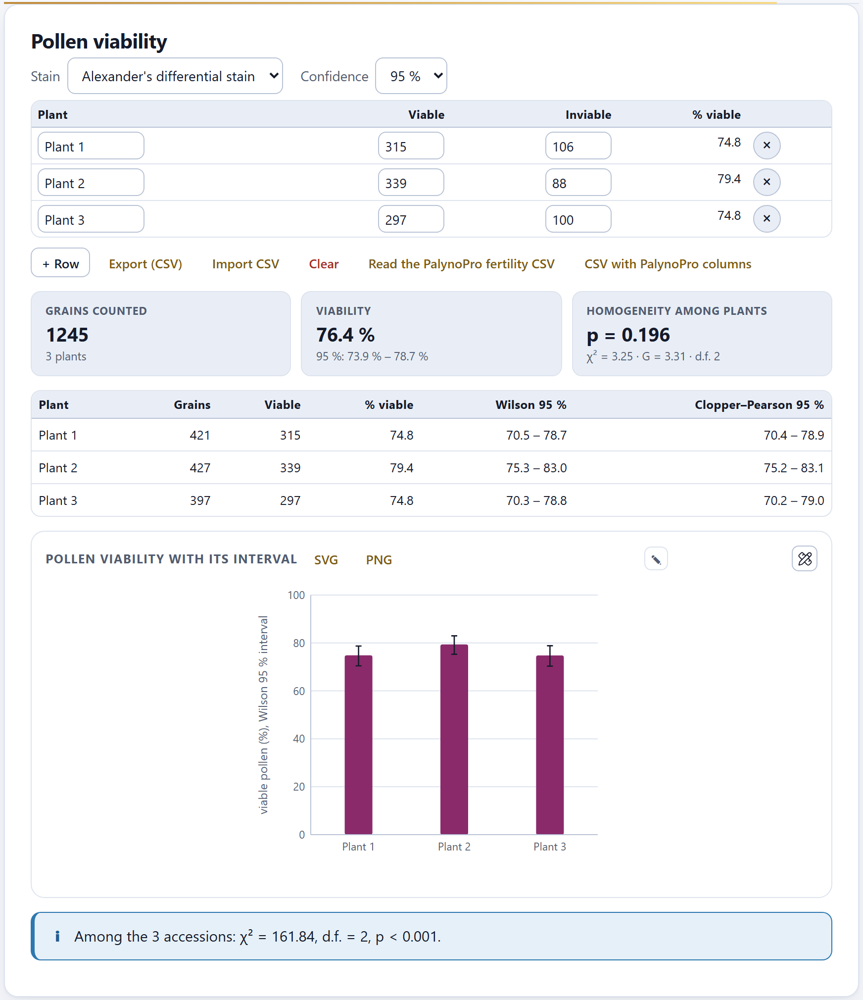

Meiosis tells how the chromosomes pair and how regular gamete formation is. Block 5 gathers what you count under the microscope—the configurations at diakinesis or metaphase I, the abnormalities of each phase, the tetrads and the stained pollen—and turns it into chiasmata per cell, a recombination index, a test of autopolyploidy against allopolyploidy, Love’s meiotic index and pollen viability with its confidence intervals.
Unlike Blocks 3 and 4, this block does not use the images or the measurements: its data are counts that you type, paste or import into four tables, and each table keeps those of the chosen accession.

On the Accession card you choose the accession, create another with + Accession or open the example with Open the example polyploid series: an invented species with three populations, diploid, tetraploid and hexaploid, with x = 7, two plants and 25 cells per plant, its phases, tetrads and pollen, all simulated with the app’s model. Base number x is the same number as in Blocks 3 and 6; here it is needed to set out the hypotheses of Section 5.3. This chapter mostly uses the tetraploid population.
The four tables of the block work the same way. Each row is a cell (or a plant, depending on the table) and each field is typed by hand; numbers are rounded to integers. Below each table are + Row, which adds a row (copying the plant of the previous one in the configurations table), Export (CSV), Import CSV and Clear, which deletes all the rows of the accession after you confirm. The × at the end of a row deletes it.
configurations_<accession>.csv, phases_…, tetrads_… or pollen_…, depending on the table.One row per cell, with how many configurations of each type you saw: univalents, rod and ring bivalents, trivalents, chain and ring quadrivalents, pentavalents and chain and ring hexavalents.

The columns are Plant, Cell, one per configuration (I, II rod, II ring, III, IV chain, IV ring, V, VI chain, VI ring) and Chiasmata counted. The last two, which cannot be edited, are computed by the app: Chromosomes adds up the chromosomes of all the configurations (a II has two, a IV four) and Chiasmata estimates them: a chain of k chromosomes has k − 1 chiasmata and a ring k; thus rod 1, ring 2, III 2, chain IV 3, ring IV 4. It is the minimum compatible with the configuration. If you counted the chiasmata, type them in Chiasmata counted and they prevail over the estimate.

Below the table, six figures summarize the accession:
The summary table repeats those counts by plant and for the whole accession: the mean configurations per cell (V and VI together in ≥ V), the chiasmata per cell and per bivalent, the recombination index and the percentage of cells with multivalents. The Configurations per cell chart has one series per plant, with error bars of one deviation.
In the diploid (2n = 14) there are no multivalents: 5.42 ring and 1.52 rod bivalents per cell, 12.36 ± 1.10 chiasmata per cell, 1.78 per bivalent, recombination index 7 + 12.36 = 19.36. In the tetraploid (2n = 28) every cell has multivalents, 2.24 chain IV and 1.58 ring IV per cell, and the chiasmata per bivalent drop to 1.55: there are more rods. Its recombination index is 14 + 21.78 = 35.78.
An autopolyploid has several sets of the same genome, which may pair in threes or fours; an allopolyploid brings together different genomes that each pair with themselves, in bivalents. The block compares the observed configurations with those expected under each hypothesis.
Each hypothesis is written as a genome formula, one letter per set: AAAA is an autotetraploid, AABB an allotetraploid, AAAABB an intermediate segmental one. With the basic number and the cells already entered, the app proposes on its own Hypothesis 1, the autopolyploid one (AAAA in the tetraploid), and Hypothesis 2, the allopolyploid one made of pairs (AABB); Hypothesis 3 (optional) is left for the one you want to test. You can write up to eight genomes; the formula, multiplied by x, must give the 2n of the cells, or a notice says so. Chiasma per arm, c can be Estimated from the data or Fixed, and then Value of c appears (0.8 by default).

The table gives, for each configuration, those observed in all the cells and those expected under each hypothesis, and at the foot c, χ², the degrees of freedom and the p value. The Observed and expected per cell chart draws it per cell. Below, a notice states the conclusion:
Each chromosome has two arms. At the end of each arm, the homologs of a group pair two by two at random (with an odd number, one stays unpaired), independently at the two ends, and each paired arm forms a chiasma with probability c. A configuration is a set of chromosomes held together by chiasmata: a chain if it is open, a ring if it is closed. With four homologs, the two ends choose the same partner with probability 1/3, so quadrivalent pairing occurs with probability 2/3 (Sybenga 1975); the frequencies follow the same counting as the models of Jackson and Casey (1982). The app computes them exactly, enumerating all the pairings and all the chiasma patterns, without simulation. When estimated, c is the mean chiasmata divided by the pairable arms: in the tetraploid, 21.78 / (7 × 4) = 0.778.
| Classes | I, II rod, II ring, III, IV chain, IV ring and ≥ V. Those with fewer than 5 expected are pooled with their smaller neighbor before the test. |
| Degrees of freedom | The remaining classes minus 1, and minus 1 more if c was estimated from the data. |
| If p ≥ 0.05 | then the hypothesis fits the data (which does not mean it is true). |
| If the hypothesis does not allow an observed configuration | then it is rejected, whatever its χ². |
With c fixed at 0.80, AAAA still fits in the tetraploid, but less comfortably (χ² = 9.31, 5 d.f., p = 0.097).
In the hexaploid the app proposes AAAAAA and AABBCC, with c = 0.850. Autohexaploidy is far off (χ² = 2777.05, 5 d.f., p < 0.001): it expects 158.1 configurations of five or six chromosomes and none was seen. AABBCC explains the univalents and bivalents well (χ² = 2.39 with 1 d.f.), but it does not allow the 22 observed multivalents (1 III, 3 chain IV and 18 ring IV) and is rejected. If you type AAAABB as a third hypothesis, it does not fit either (χ² = 447.33, 4 d.f.), and the notice then suggests only the one left, AAABBB. The reading is that of an allohexaploid with occasional pairing outside its own genome, which is exactly how it was simulated: 16% of its cells were drawn from the AAAABB model.

One row per plant and phase, with how many normal cells you saw and how many with each abnormality.
The columns are Plant, Phase (from Metaphase I to Telophase II), Normal and seven abnormalities: Bridges, Fragments, Laggards, Precocious migration, Multiple or abnormal spindles, Micronuclei and Other. Count each abnormal cell only once, under its main abnormality: the app adds the abnormal and the normal cells to get the total of the phase.

The summary pools the plants by phase: cells, normal, each abnormality and the % abnormal. The Abnormal cells by phase (%) chart draws it with the phases abbreviated (MI, AI…). For reference, in the example diploid no phase exceeds 3.7%.
Love’s (1951) meiotic index is the percentage of normal tetrads; Love considered a plant cytologically stable at 90 or more.
One row per plant, with Normal tetrads, With micronuclei, Dyads, Triads and Polyads. The results table gives, per plant, the tetrads counted, the normal ones, the Meiotic index (%), its 95 % interval (Wilson) and whether it is Stable (≥ 90); with more than one plant, it adds the row of the accession and, at the foot, the χ² test of homogeneity among plants.

Decide with the interval, not just with the figure. In the tetraploid, even the upper end (87.9) is below 90: the instability is clear. In the example hexaploid, plant 1 has 93.0% but its interval goes down to 89.5; the diploid, with 96.8% in the accession, is stable beyond doubt.
One row per plant with the viable (stained) and the inviable grains; the app gives the viability with two confidence intervals and tests whether the plants differ.
At the top, Stain records how the pollen was stained: Alexander's differential stain (default), Acetocarmine, Tetrazolium chloride (TTC) or Other. It does not change the calculations; the methods of Block 10 use it. Confidence chooses 95%, 99% or 90% for the intervals of this card.

The plant table has the computed column % viable. Below, three figures: Grains counted with the number of plants, Viability of all the grains pooled with its Wilson interval, and Homogeneity among plants, with the p value and the χ² and G statistics of the plants × viable/inviable table. The results table gives each plant with its grains, viable ones, percentage and the Wilson and Clopper–Pearson intervals, and the chart, each plant with its Wilson interval. If the plants differ (p < 0.05), a notice advises reporting them separately; if there is pollen in more than one accession, another notice compares the accessions with χ².
Two more buttons link to PalynoPro, the palynology app of the suite: Read the PalynoPro fertility CSV reads its fertility file (the columns landrace_code, n_granos_completos and pct_atipico) and turns the percentage of grains of atypical shape into inviable ones; a notice recalls that this percentage comes from the shape of the grain under electron microscopy, not from a stain, and is only an approximation. CSV with PalynoPro columns writes the data of this table in that same format, in the file pollen_<accession>_palynopro.csv.
The Wilson (1927) interval is the one recommended for a proportion: its coverage stays close to the nominal one even with high proportions such as those of pollen. The Clopper–Pearson (1934) interval is exact, with coverage of at least the nominal one, and therefore slightly wider: in plant 1 of the tetraploid, 70.5% to 78.7% against 70.4% to 78.9%. With 99% confidence, the viability of the tetraploid goes from 73.2% to 79.3%. Homogeneity is tested with χ² and with G (likelihood ratio); with large counts they give almost the same (3.25 and 3.31).
| If there are multivalents in many cells | then test autopolyploidy; if no formula fits, try an intermediate one. |
| If the meiotic index is below 90 | then the plant is cytologically unstable according to Love (1951); look at it with its interval. |
| If the plants differ (homogeneity p < 0.05) | then report each plant separately, not the accession pooled. |
| If pollen viability drops together with the meiotic index | then meiotic abnormalities are a likely explanation, as in the example tetraploid (85.3% normal tetrads, 76.4% viable pollen). |
The example data are simulated: the figures are for learning to read the app, not for describing a species.
The hypothesis card asks for the basic number. Type it in Base number x. A notice says the formula does not give the 2n of the cells. The formula has one letter per set: with x = 7 and 2n = 28 you need four letters. The chromosomes figure says “not in all”. Some row does not add up to 2n: check the Chromosomes column. I imported a CSV and nothing came in. The file needs headers the app recognizes; export a table to see the format. I changed accession and the hypotheses were cleared. That is expected: they are proposed again with the basic number of the new accession.